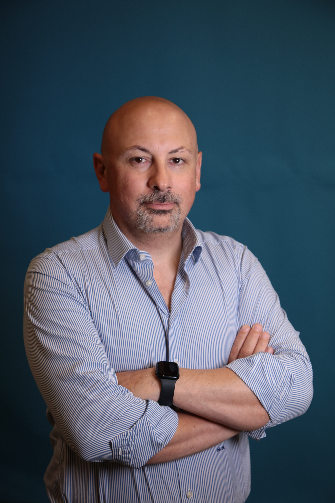
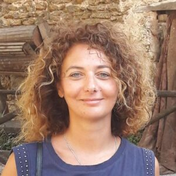

Team
Un team multidisciplinare che unisce psicologia clinica, neuroscienze, ingegneria informatica ed economia urbana.
A multidisciplinary team combining clinical psychology, neuroscience, computer engineering, and urban economics.
Principal Investigator
Principal Investigator

Responsabile scientifico del progetto EcoPsy. Le sue ricerche si focalizzano sull'epidemiologia della salute mentale, sui metodi EMA e sulle interazioni persona–ambiente nei disturbi psicopatologici.
Scientific leader of the EcoPsy project. His research focuses on mental health epidemiology, EMA methods, and person–environment interactions in psychopathological disorders.
Co-Principal Investigator
Co-Principal Investigator

Co-responsabile scientifico del progetto EcoPsy. Le sue ricerche si focalizzano sui disturbi affettivi perinatali, sulla psicopatologia dello sviluppo e sulla qualità del legame di attaccamento in popolazioni a rischio.
Co-scientific leader of the EcoPsy project. Her research focuses on perinatal affective disorders, developmental psychopathology, and attachment quality in at-risk populations.
Comitato Tecnico-Scientifico
Scientific Advisory Committee
Partner istituzionali
Institutional partners
Dept. Psicologia Dinamica Clinica e Salute.
Referente: Prof. Patrizia Velotti.
Dept. of Dynamic Clinical Psychology and Health.
Contact: Prof. Patrizia Velotti.
Digital Computational Psy Lab. Collaborazione per analisi computazionali e Machine Learning.
Digital Computational Psy Lab. Collaboration for computational analyses and Machine Learning.
Collaborazione con la SIPsyC per la diffusione dei metodi computazionali in psichiatria.
Collaboration with SIPsyC for the dissemination of computational methods in psychiatry.